Case Study
Sleeve Stories: The History of Album Covers
An exhibit identity system imagining how the Milwaukee Art Museum could bring the visual history of album cover design to life. Built as one cohesive system across print, digital, and 3D applications.
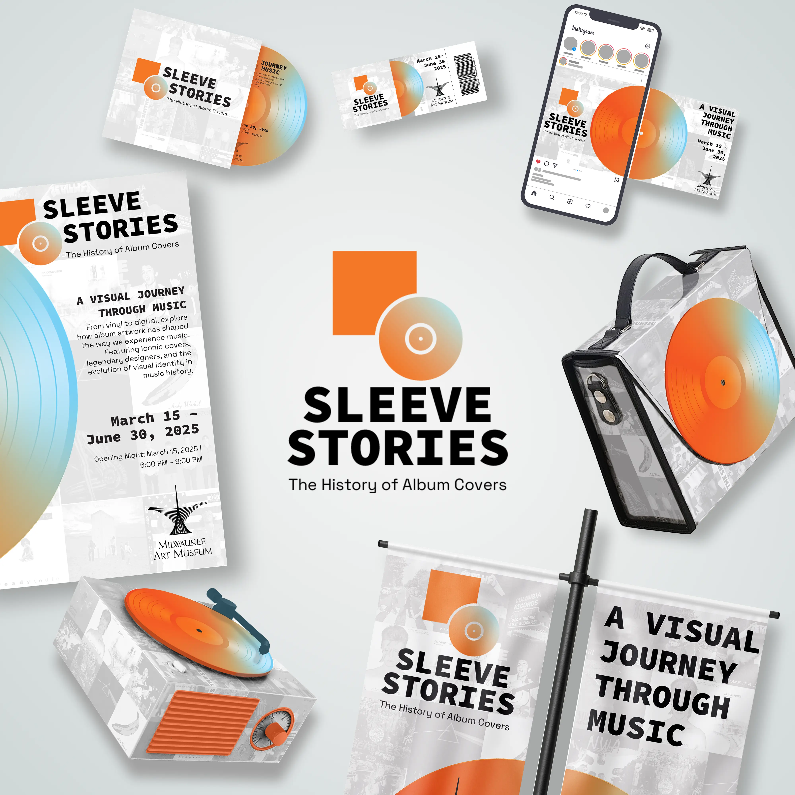
Project brief
This project called for a short-term identity system for a museum exhibit built around a moment in design history. I chose the evolution of album cover art, a form that sits at the intersection of music, culture, and design, and one with a rich enough visual language to build a full system around.
The challenge was balancing two audiences at once: an identity that honors the analog legacy of album artwork for longtime collectors, while still feeling current enough to draw in a younger, streaming-native crowd. That meant the system needed to bridge eras of vinyl, CD, and streaming, under one visual voice rather than picking a single nostalgic lane.
Refined system & applied executions
The logo pairs a circle, standing in for a record, with a bold square acting as the "sleeve", a direct, literal read on the name that still holds up as a clean mark at small sizes. Behind it, a low-opacity grid of iconic album covers runs as a watermark across every piece. It's a deliberate choice: rather than illustrating the exhibit's theme once on a poster, the background makes the point on every touchpoint that today's cover art is built on decades of design history.
Color and type carry the rest of the tension the brief called for. Deep orange and soft blue gradients read as warmth and rhythm, while clean black type keeps the system legible and current instead of tipping into pure nostalgia.
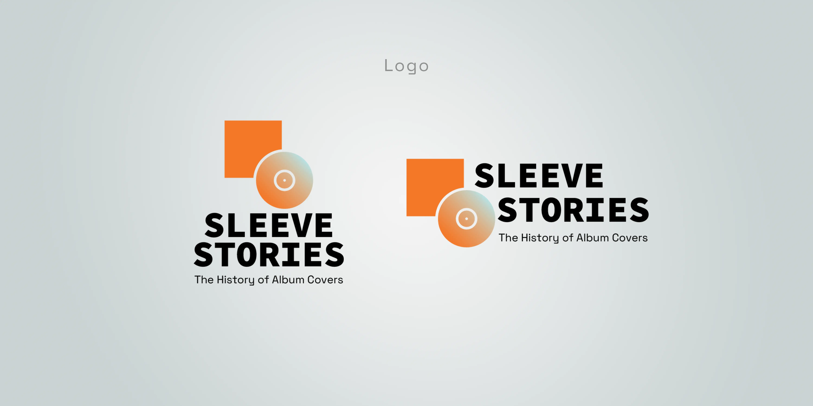
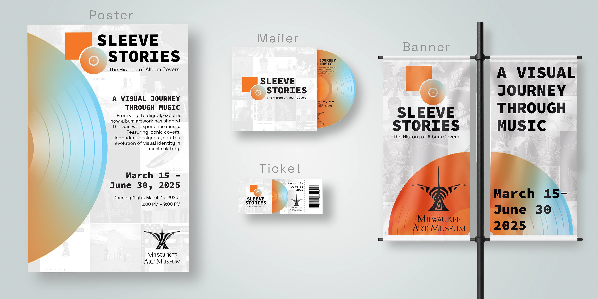
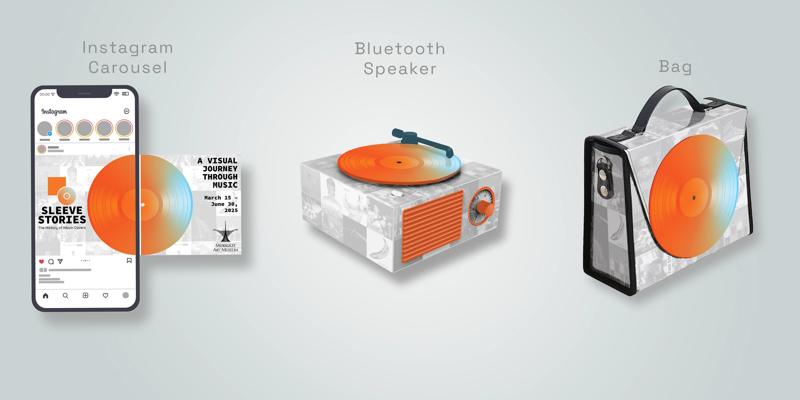
Deliverables:
- Logo system
- 11x17 poster
- Mailer and ticket design
- Instagram carousel with motion
- 3D promotional item (Bluetooth speaker)
- Gift shop bag
The gradient record motif and the archival grid do the heavy lifting of tying the system together, the same two devices recur across poster, banner, ticket, and social graphics, so the identity reads as one system rather than a set of matching colors applied to unrelated layouts.
Process: research, concept & sketches
I started by studying how album artwork evolved from the 1950s on. I studied designers like Reid Miles, Peter Saville, and Storm Thorgerson, whose covers did more than decorate music; they defined an artist's entire visual persona. That research set the bar for what the identity needed to do: communicate mood and history at a glance, not just look nice on a poster.
From there I worked out three distinct directions for the core deliverables: poster, mailer, ticket, and banner, each testing a different way to visualize the relationship between music and design. Moodboards and hand sketches let me test hierarchy and rhythm before committing anything to screen.
Concept, moodboard & system rules
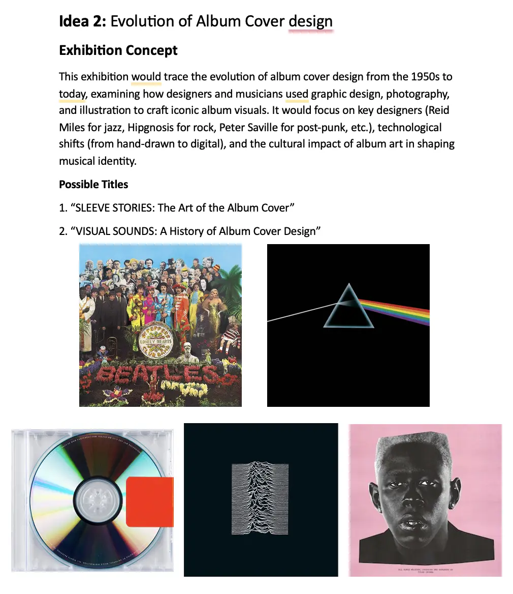
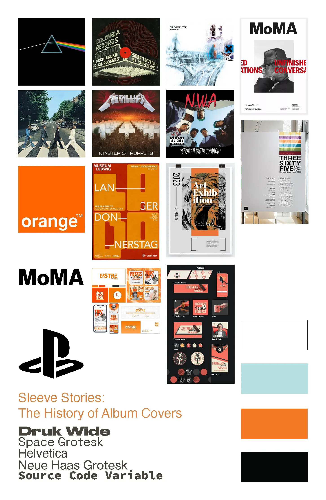
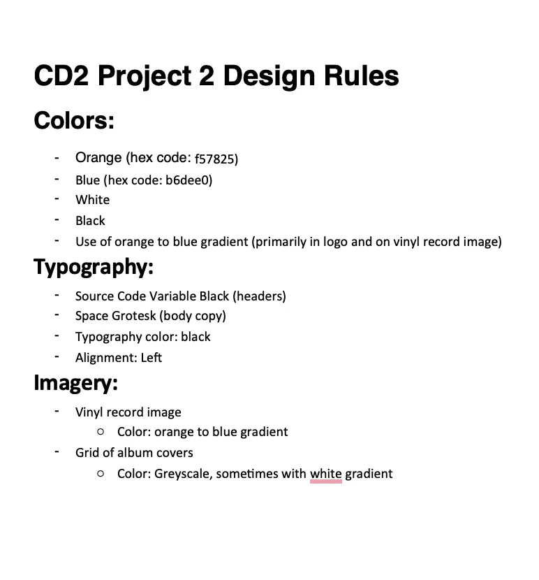
Sketches
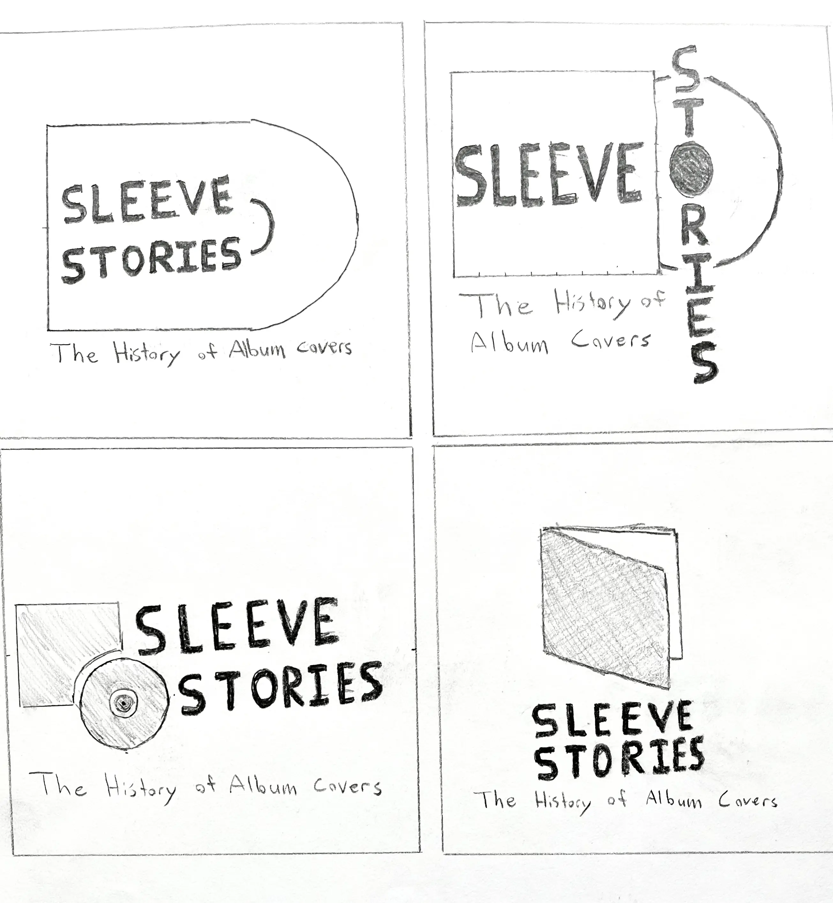
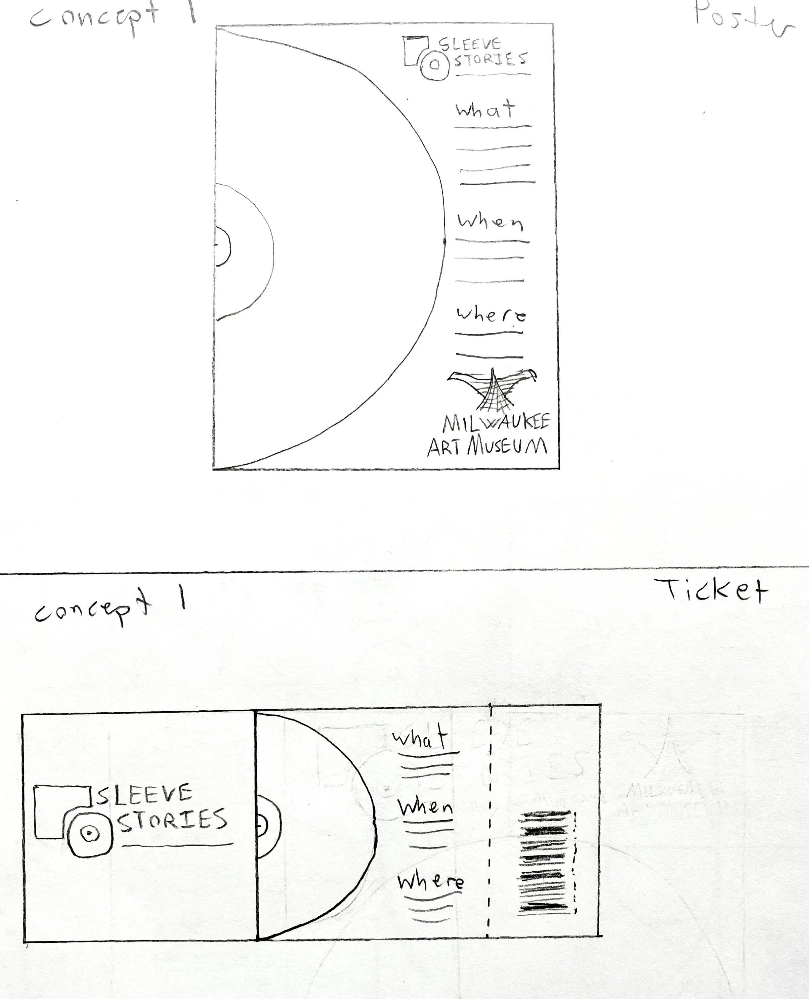
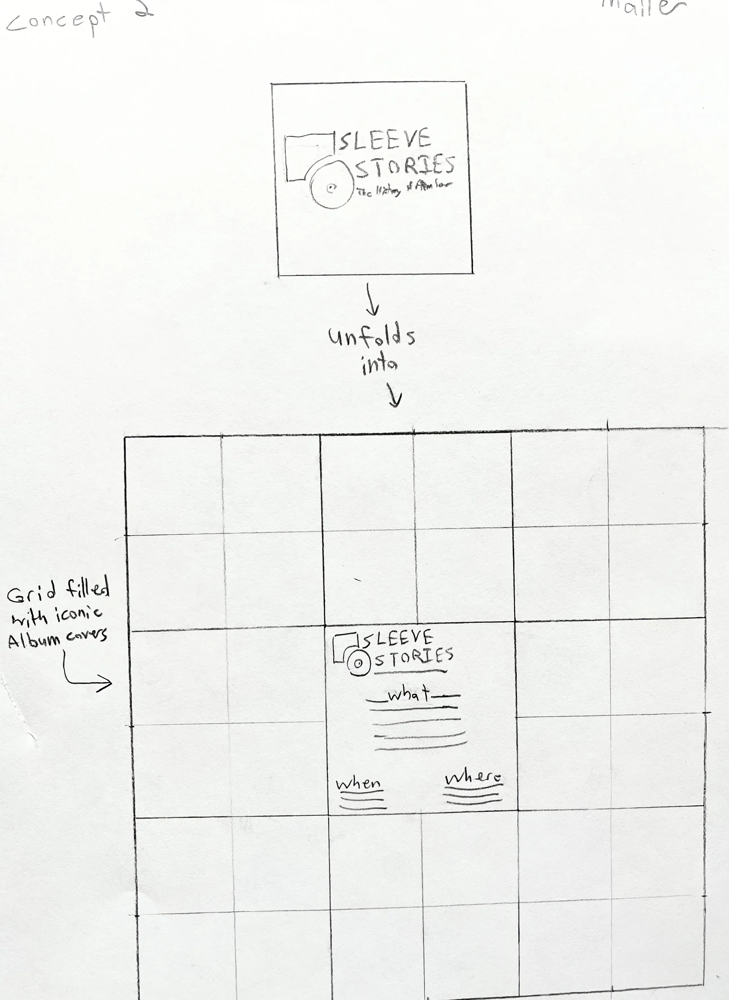
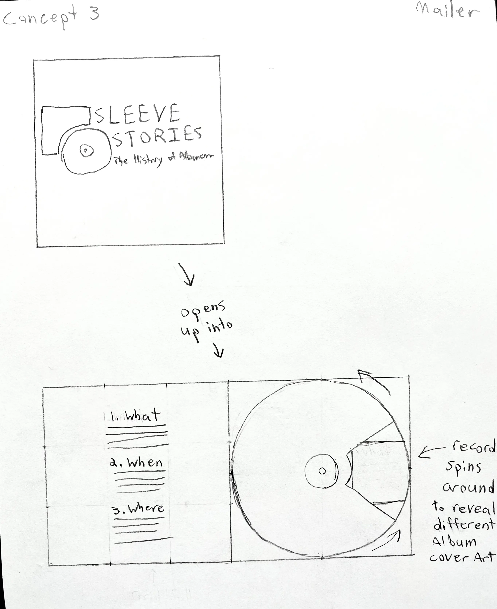
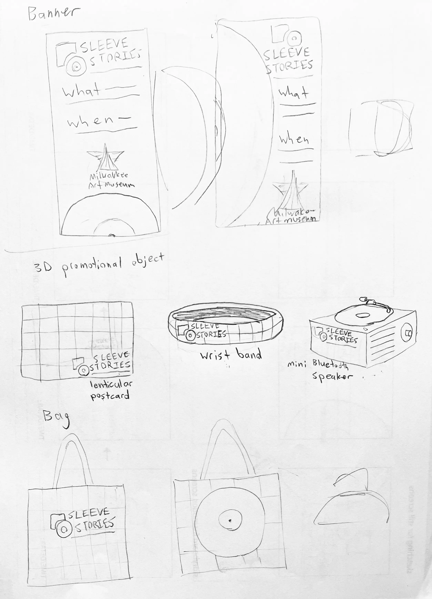
Closing thought
The biggest lesson from Sleeve Stories was building a system, not a set of matching pieces. A shared logo mark and color palette will make things look related, but what actually holds an identity together across a poster, an Instagram carousel, and a 3D object is a small set of repeatable devices (the gradient motif, the archival grid) applied consistently, so the system stays recognizable no matter what it's printed or projected on.